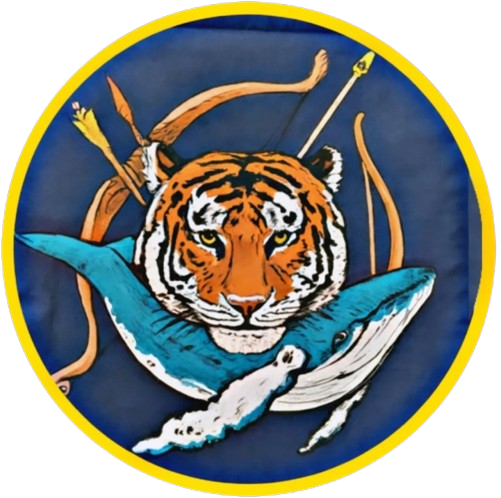

<!DOCTYPE html>
<html lang="en">
<head>
    <meta charset="UTF-8">
    <meta name="viewport" content="width=device-width, initial-scale=1.0">
    <title>Tamil Art & Culture - Logesh Art Gallery</title>
    <link rel="icon" type="image/png" href="images/Screenshot_2024-10-29-21-31-32-73_1c337646f29875672b5a61192b9010f9-removebg-preview.png">
    <script src="https://cdn.jsdelivr.net/npm/react@18.2.0/umd/react.production.min.js"></script>
    <script src="https://cdn.jsdelivr.net/npm/react-dom@18.2.0/umd/react-dom.production.min.js"></script>
    <script src="https://cdn.jsdelivr.net/npm/babel-standalone@6.26.0/babel.min.js"></script>
    <script src="https://cdn.tailwindcss.com"></script>
    <link href="https://fonts.googleapis.com/css2?family=Noto+Serif+Tamil:wght@400;700&family=Poppins:wght@400;600;800&display=swap" rel="stylesheet">
    <style>
        body {
            font-family: 'Poppins', sans-serif;
            background: linear-gradient(135deg, #ff6f00 0%, #2e7d32 100%);
            color: #fff;
            margin: 0;
            overflow-x: hidden;
        }
        .glass-effect {
            background: rgba(255, 255, 255, 0.1);
            backdrop-filter: blur(10px);
            border: 1px solid rgba(255, 255, 255, 0.2);
            box-shadow: 0 4px 30px rgba(0, 0, 0, 0.1);
        }
        .tamil-border {
            border: 2px solid transparent;
            border-image: linear-gradient(45deg, #ff6f00, #1e88e5) 1;
            transition: transform 0.3s ease, box-shadow 0.3s ease;
        }
        .tamil-border:hover {
            transform: translateY(-5px);
            box-shadow: 0 10px 20px rgba(0, 0, 0, 0.2);
        }
        .nav-link {
            position: relative;
            transition: color 0.3s ease;
        }
        .nav-link::after {
            content: '';
            position: absolute;
            width: 0;
            height: 2px;
            bottom: -2px;
            left: 0;
            background-color: #ff6f00;
            transition: width 0.3s ease;
        }
        .nav-link:hover::after {
            width: 100%;
        }
        .section-title {
            position: relative;
            display: inline-block;
            margin-bottom: 2rem;
        }
        .section-title::before {
            content: '';
            position: absolute;
            width: 50%;
            height: 4px;
            bottom: -8px;
            left: 25%;
            background: linear-gradient(to right, #ff6f00, #1e88e5);
        }
    </style>
</head>
<body>
    <div id="root"></div>
    <script type="text/babel">
        const photos = [
            { id: 1, title: "Chola coin", image: "images/IMG_5031.jpeg", description: "Exquisite bronze coin from the Chola dynasty." },
            { id: 2, title: "Temple Gopuram", image: "images/IMG_20240904_230437_442 (1).JPG", description: "Vibrant gopuram of a South Indian temple." },
            { id: 3, title: "Tamil Kalvettu", image: "images/12450262745_6905e1c6db_h.jpg", description: "Ancient Tamil Stone inscription." },
        ];

        const Navbar = () => (
            <nav className="glass-effect p-6 fixed w-full z-10">
                <div className="container mx-auto flex justify-between items-center">
                    <h1 className="text-3xl font-bold text-white flex items-center space-x-2">
                         { e.target.src = "https://via.placeholder.com/48?text=Logo"; }} 
                        />
                        <span>Logesh Art Gallery</span>
                    </h1>
                    <div className="space-x-6">
                        <a href="starter1.html#home" className="text-white nav-link">Home</a>
                        <a href="starter1.html#gallery" className="text-white nav-link">Gallery</a>
                        <a href="starter1.html#about" className="text-white nav-link">About</a>
                        <a href="starter1.html#contact" className="text-white nav-link">Contact</a>
                    </div>
                </div>
            </nav>
        );

        const TamilArtCulture = () => (
            <section id="tamil-art-culture" className="py-20 bg-cover bg-center" style={{ backgroundImage: "url('images/IMG_4902.jpeg')" }}>
                <div className="container mx-auto">
                    <h2 className="text-4xl font-bold text-center mb-12 text-white section-title mt-16">Tamil Art & Culture</h2>
                    <div className="glass-effect p-8 rounded tamil-border max-w-3xl mx-auto mb-12 flex items-center space-x-4">
                         { e.target.src = "https://via.placeholder.com/100x100?text=Yazhi"; }} 
                        />
                        <p className="text-lg text-white flex-1">
                            Tamil art and culture are renowned for their rich heritage, characterized by intricate sculptures, vibrant temple architecture, and profound spiritual traditions. From the majestic Chola bronzes to the towering gopurams of South Indian temples, Tamil art reflects a deep connection to spirituality and history. This page celebrates the legacy of Tamil Nadu’s artistic contributions, including divine depictions of Hindu deities and heroic representations of Tamil kings.
                        </p>
                         { e.target.src = "https://via.placeholder.com/100x100?text=Yazhi"; }} 
                        />
                    </div>
                    <div className="grid grid-cols-1 sm:grid-cols-2 lg:grid-cols-3 gap-8 max-w-4xl mx-auto mb-12">
                        {photos.map(photo => (
                            <div key={photo.id} className="glass-effect p-6 rounded tamil-border">
                                
                                <h3 className="text-xl font-bold text-white">{photo.title}</h3>
                                <p className="text-gray-200">{photo.description}</p>
                            </div>
                        ))}
                    </div>
                    <div className="glass-effect p-8 rounded tamil-border max-w-4xl mx-auto mb-12">
                        <h3 className="text-2xl font-bold text-white mb-4">Do You Know Something?</h3>
                        <p className="text-lg text-white">
                           இராசேந்திர சோழன் என்பது தமிழரின் பெருமைமிக்க பேரரசர்களில் ஒருவராகும். இவர் ராஜராஜ சோழனின் மகனாக, 1014 CE முதல் 1044 CE வரை ஆட்சி செய்தார். தந்தையின் பாதையில் சென்று, சோழ பேரரசை உச்சிக்கே கொண்டு சென்றவர். இலங்கை முழுவதையும் வென்று, கங்கைநதியை அடைந்து அதன் நீரை தமிழ்நாட்டிற்கு கொண்டு வந்து "கங்கைகொண்ட சோழபுரம்" என்ற புதுநகரை அமைத்தார். தென்னிந்தியாவில் மட்டும் அல்லாமல், தென்கிழக்கு ஆசியா வரை (இந்தோனேஷியா, மலேசியா, சுமத்ரா, ஜாவா) படையெடுத்து, முதல் கடற்படைக் கப்பல் படை வழியாகத் தமிழரின் தாக்கத்தை உலகிற்கு எடுத்துச் சென்றார். இவர் ஆட்சியில் சோழர்கள் மிகப்பெரிய கடற்படை சக்தியாக மாறினர். சிறந்த நிர்வாகம், கல்வி, கலை, சிற்பம், சைவ சமய வளர்ச்சி ஆகியவை இவரின் ஆட்சிக்காலத்தில் வளர்ச்சியடைந்தன. கல்வித் துறைக்கு ஆதரவு, நூலகங்கள், மற்றும் பாடசாலைகள் உருவாக்கப்பட்டன. இவர் 'கடாரம் கொண்டான்', 'கங்கைகொண்ட சோழன்', 'மும்முடி சோழன்' என பல பட்டங்களை பெற்றவர். சோழர் பேரரசு ராஜராஜருக்கும் இராசேந்திரருக்கும் காலத்தில் உலகை வியக்கும் ஒரு தமிழர் பேரரசாக விளங்கியது.
                        </p>
                    </div>
                    <div className="text-center">
                        <a href="starter1.html" className="glass-effect tamil-border text-white font-bold py-2 px-6 rounded hover:bg-ff6f00 transition-colors">
                            Back
                        </a>
                    </div>
                </div>
            </section>
        );

        const Footer = () => (
            <footer className="glass-effect p-6 text-center">
                <p className="text-white">© 2025 Logesh Art Gallery. All rights reserved.</p>
            </footer>
        );

        const App = () => (
            <div>
                <Navbar />
                <TamilArtCulture />
                <Footer />
            </div>
        );

        const root = ReactDOM.createRoot(document.getElementById('root'));
        root.render(<App />);
    </script>
</body>
</html>